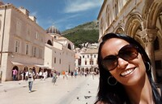

- Viviane Santos
- Portfolio
- Home
- Background

Hello, I’m Viviane.
From São Paulo to Vancouver
From São Paulo to Vancouver
Hello, I'm Viviane and I was born in São Paulo (Brazil). I´ve lived in Campinas since my studies at University, and after my degree, I started to work with Distributed Control System. I love science, traveling and meeting people.
I have traveled to different countries on my vacation, experiencing new habits, costums, food, activities and landscapes. I visited Canada for the first time in 2016 and I fell in love with its multicultural and bilingual society, which I had never seen in another country. I decided to move to Vancouver due to the climate, hospitality and vibrant atmosphere, to study.
This will be my new journey, my new home !
Run: I like to run in the morning, every single day. I started to run because of my roomates at my first year in Campinas and to keep myself fit and healthy. I fell in love with running! Today, running is more a lifestyle, keeping my mind fresh.
Science: I love to teach science to children, teenagers, as well as my friend´s children. It keeps me studying and learning.
Travel: at the begin, it was a way to run away from my busy city to get some rest. After some vacations, it became a passion and opportunity to learn new languages and costums, check out museum, hotels and places to have fun, activities, local currencies, type of government, airports and logistics, loss and damage management. Since traveling is a challenge that requires discipline, patience and good humor.
